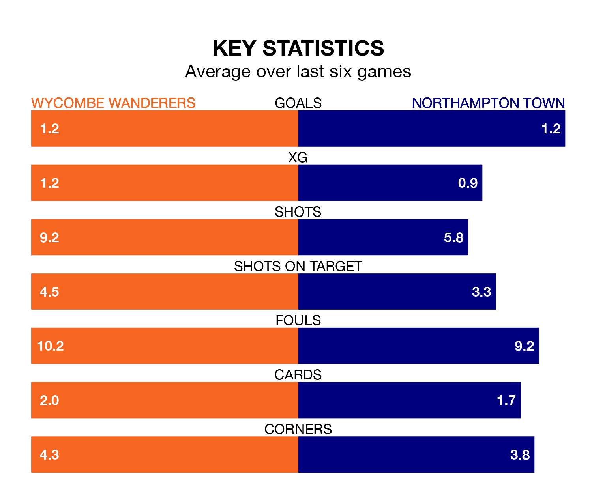

Northampton Town travel to Wycombe Wanderers on Saturday in EFL League One.
The visitors come into the game on the back of a defeat in their last match, having lost to Blackpool 1-0 at home.
The Chairboys, meanwhile, won their last match, 1-0 against Wigan Athletic, with their goal scored by Sam Tickle.
In the last 10 years, Wycombe and Northampton have played each other on seven occasions. Wycombe won four of them, Northampton two, and they drew once.
On average, the Chairboys scored 1.4 goals and the Cobblers 0.9 in those matches.
Their last meeting was on September 2, when Wycombe won 1-0 away.
With 50 goals in 38 games so far this season, Northampton are scoring at the league's average rate with 1.3 goals per game. And they are conceding more than average, letting in 58 goals at a rate of 1.5 per game.
Wycombe are also average scorers, with 1.3 goals per game. They have also conceded 1.3 goals per game.
Wanderers are in mixed form in EFL League One, with three wins and a draw from their last six games.
With a win and three draws over that period, Town's form is worse – they have taken six points from 18, compared to the Chairboys' 10.
In Sam Hoskins, the Cobblers have one of the league's sharpest shooters so far this season. He has notched 14 goals in 32 appearances, to sit seventh in the scoring charts.
His goal rate of one every 180 minutes is much quicker than that of Luke Leahy, the hosts' top scorer with a goal every 367 minutes, and a total of eight goals in 35 games.
Wycombe are 14th in the table after 37 games, of which they have won 12 and drawn 11, earning 47 points.
The away side are one place ahead of Wycombe in 13th, with 14 wins and eight draws putting them on 50 points.
Saturday's match will be refereed by Oliver Yates, who has taken charge of 14 EFL League One games so far this season, issuing two red cards and booking 64 players. He has awarded four penalties.
The last Wycombe game Yates refereed was a 5-2 home win against Peterborough United on February 10. His last Northampton match was their 2-2 draw at home against Lincoln City on August 15.
Updated: 15:10 (UTC), 15/03/24